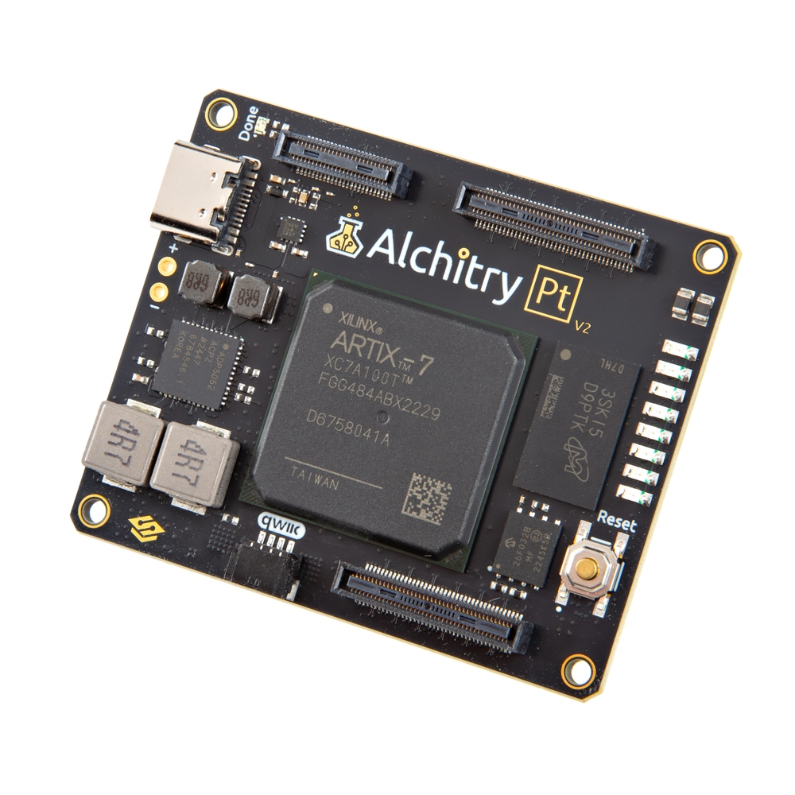
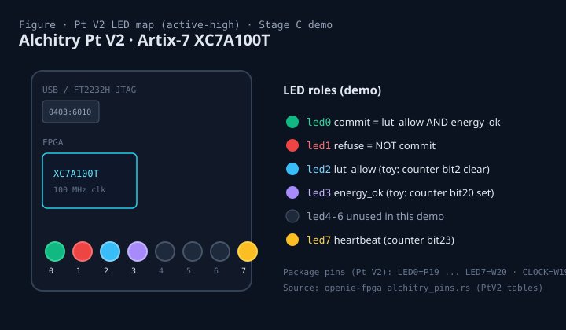
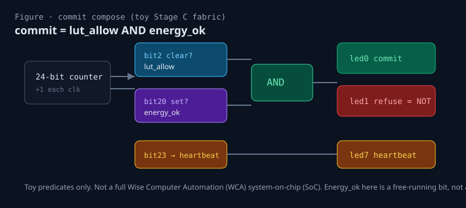
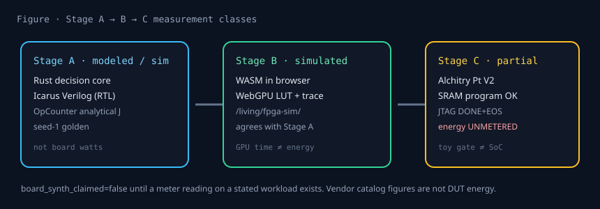
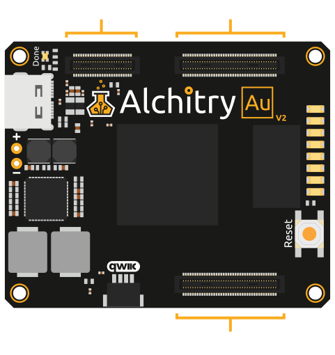
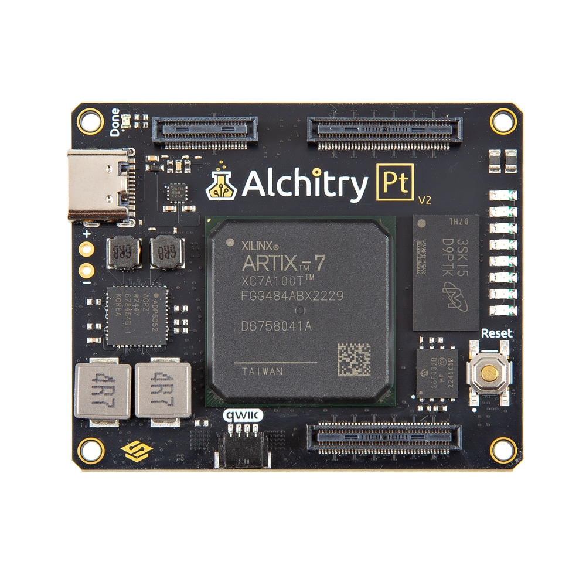
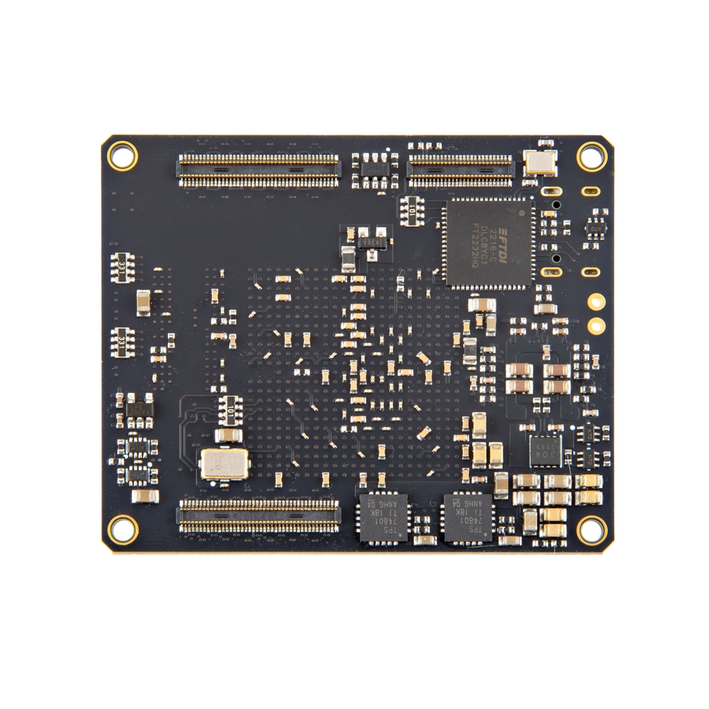
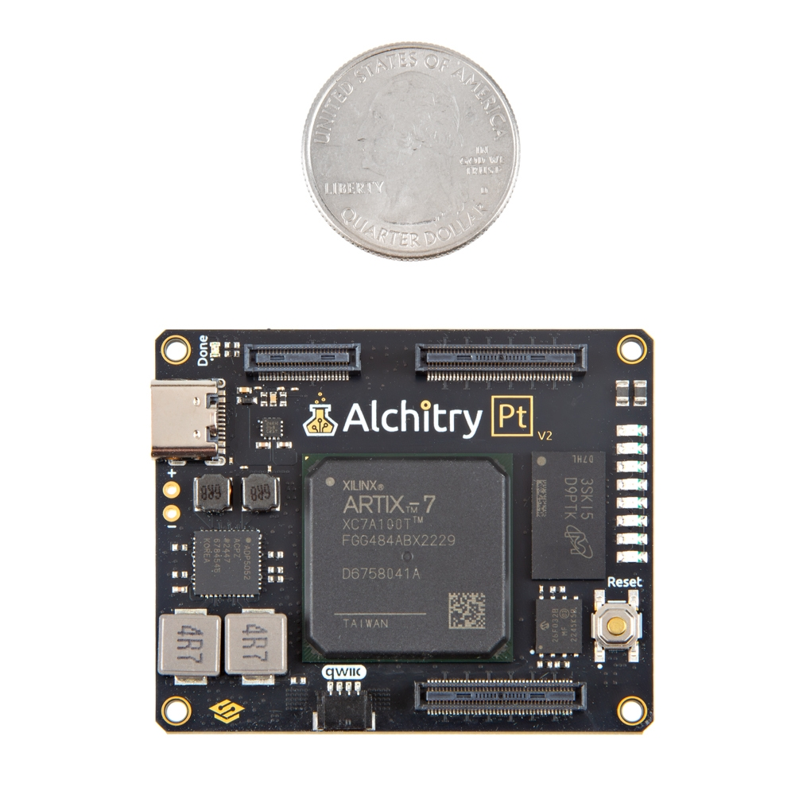

Alchitry Pt V2 with OpenIE / WCA commit-gate
Educational guide for builders: detect the board, build a blink and the Wise Computer Automation (WCA) commit-gate demo, flash it, and read the LEDs. Matches Stage C evidence captured 2026-09-30 EDT (closed-loop pendulum with Safe PH and control barrier function).
This page is a how-to companion to /living/fpga-sim/ (Stage B browser simulation) and stage-c/board-evidence.md. It does not report board joules.
What the board is
The Alchitry Pt V2 is a field-programmable gate array (FPGA) development board sold by SparkFun Electronics.
Vendor documentation lists a Xilinx (AMD) Artix-7 part XC7A100T-2FGG84I, with catalog figures including 101,440 logic cells, 240 DSP48E1 slices, 4,860 Kb block RAM, 256 MB DDR3L, eight general-purpose LEDs, a 100 MHz oscillator, and an FT2232HQ bridge for USB JTAG and UART.
Cite the vendor page for those catalog numbers; they are not Open Interface Engineering (OpenIE) bench measurements.

Alchitry Pt V2 (SparkFun SKU DEV-27873). Product photo © SparkFun Electronics. Educational non-commercial display; see images/ATTRIBUTION.md.
Vendor: sparkfun.com/alchitry-pt-v2.html (SKU DEV-27873).
Stage C USB product string observed on the attached board: Alchitry Pt V2 (vid 0x0403 / pid 0x6010).
What you need
- Mac or Linux host with a free USB port.
- Alchitry Pt V2 powered and connected by USB (FT2232H JTAG channel).
- Rust toolchain and the
openie-fpgatree so theofpgaCLI builds (cargo build -p ofpga-cli --release, then use the resultingofpgabinary). - Design sources in the repo root:
blink_alchitry_pt_v2.fpgaandwca_commit_gate_pt_v2.fpga.
Detect the board
With the board attached, run:
ofpga detect
Expected UART shape from the closed-loop Stage C capture (2026-09-30 ~03:51 EDT):
1 device(s) found:
FPGA Boards:
Alchitry Pt V2 (Artix-7)
USB 0403:6010 - Jtag
Matching product string via IOKit on macOS: Alchitry Pt V2.
If nothing is listed, check the cable, power, and that no other process holds the FTDI interface.
Build blink and the commit-gate demo
From the openie-fpga repository root:
# Sanity blink (LED0 toggles from a free-running counter) ofpga build blink_alchitry_pt_v2.fpga -t alchitry-pt-v2 # Stage C commit-gate LED demo ofpga build wca_commit_gate_pt_v2.fpga -t alchitry-pt-v2
Target alias alchitry-pt-v2 selects the native XC7 emitter for the Artix-7 on this board.
Successful builds write bitstreams under build/ (for example build/wca_commit_gate_pt_v2.bit).
Design path
Canonical demo source in-tree: openie-fpga/wca_commit_gate_pt_v2.fpga.
Mirrored on this site: ./wca_commit_gate_pt_v2.fpga
and ../stage-c/wca_commit_gate_pt_v2.fpga.
Flash steps (SRAM vs configuration flash)
- Confirm detect succeeds.
- Program the bitstream into FPGA configuration SRAM over JTAG (default Stage C path):
ofpga flash build/wca_commit_gate_pt_v2.bit # or pin the board explicitly: ofpga flash build/wca_commit_gate_pt_v2.bit -b alchitry-pt-v2
- Read the tool status. Closed-loop Stage C recorded Mode Sram, size 3825913 bytes, IDCODE
0x13631093, Status DONE=1 INIT=1, STAT with CRC_ERR=0 EOS=1 DONE=1.
SRAM vs flash
SRAM configuration loads the fabric for the current power cycle. A reset or power loss clears it. That is what Stage C used. The Pt V2 also carries vendor-listed configuration flash (32 Mbit on the SparkFun page). Persisting a bitstream into that flash is a separate workflow and was not part of the Stage C evidence log. Prefer SRAM while iterating demos.
Excerpt from the Stage C flash log:
Board: Alchitry Pt V2 (Artix-7) USB: bus 0 addr 14 (0403:6010) Mode: Sram Size: 104140 bytes IDCODE: 0x13631093 Status: 0x35 (DONE=1 INIT=1) STAT: 0x501079FC (CRC_ERR=0 EOS=1 DONE=1 STARTUP_STATE=4 BUS_WIDTH=x1) Programmed 104140 bytes via JTAG (SRAM) - DONE + EOS asserted
How to read the LEDs
The demo drives active-high LEDs from a free-running counter and two toy predicates.
commit is the conjunction of look-up table (LUT) allow, Safe port-Hamiltonian (PH) energy OK, and control barrier function (CBF) OK:
commit = lut_allow AND energy_ok AND cbf_ok.
A control barrier function is a set-invariance certificate: with barrier h = E_max - V on the same pendulum energy V, the fabric refuses when h < 0 or when the Lie check ω·u ≤ κ·h fails (Safe Q16.16 residual twin of the Ames energy-set CBF).

LED package pins for Pt V2 (from openie-fpga alchitry_pins.rs): LED0=P19, LED1=P20, LED2=T21, LED3=R19, LED7=W20, CLOCK=W19.
| LED | Signal | Meaning in this demo |
|---|---|---|
| led0 | commit | lut_allow AND energy_ok AND cbf_ok |
| led1 | refuse | NOT commit |
| led2 | lut_allow | toy: allow when counter bit2 is clear |
| led3 | energy_ok | Safe Q16.16 PH residual pass (not a joule meter) |
| led4-6 | (unused) | not driven by this design |
| led7 | heartbeat | counter bit23; proves the fabric is live |

Compose path inside wca_commit_gate_pt_v2.fpga. energy_ok here is a free-running bit mask, not board-measured energy.
UART seed-1 readback
After flashing wca_commit_gate_uart_pt_v2.bit (synthesizable TLMM+LUT+PH+CBF commit gate; not a decision ROM), open the FT2232H channel B serial port
(on macOS typically /dev/cu.usbserial-0000001) at 115200 baud 8N1.
One episode prints a banner WCA1 C01 R15 S06 and sixteen lines
Sii Lx Ex Cx. Seed-1 agreement means sole commit at step 6
(S06 L1 E1 C1), with lut_allow=1 on every step and
energy_ok only there.
# example capture
python3 -c "import serial,time; s=serial.Serial('/dev/cu.usbserial-0000001',115200,timeout=0.2); time.sleep(0.2); print(s.read(8000).decode('ascii','replace')); s.close()"
CTA: compare your capture to uart-transcript.txt and uart-agreement.json. Full notes: board-evidence.md.
Relationship to Stage A and Stage B

Measurement classes. Stage B lives at /living/fpga-sim/. Stage C evidence: board-evidence.md.
- Stage A (Rust / Icarus). Software reference and register-transfer level (RTL) simulation. Analytical OpCounter joules. Not board power.
- Stage B (WASM / WebGPU). Same decision core in the browser with LUT and commit-trace visualization. Simulated agreement with Stage A seed-1 golden. WebGPU time is not energy.
- Stage C (this board). Detect + SRAM program of a closed-loop WCA commit-gate UART (on-fabric pendulum plant + TLMM + allow LUT + Safe Q16.16 PH + Ames energy-set CBF). UART agrees with seed-1 golden where comparable (on seed-1 the CBF conjunct does not change the allow/refuse trace versus LUT and Safe PH alone). Energy unmetered. Pt V2 has no onboard joule meter.
Source, bitstream SHA, and paths
Bitstream identity (Stage C)
- file
- stage-c/wca_commit_gate_uart_pt_v2.bit (3825913 bytes)
- SHA-256
- 5308f5c4d83bc484c6a6f6b5f6228941e68e880d34be4893dca60b1f6bd5343c
- IDCODE
- 0x13631093 (XC7A100T class, as reported by flash)
- evidence
- board-evidence.md
Key .fpga design (also on disk in openie-fpga/):
# WCA commit-gate LED demo for Alchitry Pt V2 (Artix-7 XC7A100T) # LED map (active-high on Pt V2): # led0 = commit (lut_allow AND energy_ok) # led1 = refuse (NOT commit) # led2 = lut_allow (toy: allow when counter bit2 == 0) # led3 = energy_ok (toy: allow when counter bit20 == 1) # led7 = heartbeat (counter bit23) # # Build: ofpga build wca_commit_gate_pt_v2.fpga -t alchitry-pt-v2 # Flash: ofpga flash build/wca_commit_gate_pt_v2.bit -b alchitry-pt-v2 new wca_commit_gate_pt_v2 clock 100 input clk 1 const one 1 24 const zero 0 24 add next_count counter one reg counter next_count const energy_mask 1048576 24 and energy_bits counter energy_mask eq energy_z energy_bits zero not energy_ok energy_z const lut_mask 4 24 and lut_bits counter lut_mask eq lut_allow lut_bits zero and commit lut_allow energy_ok not refuse commit const hb_mask 8388608 24 and heartbeat counter hb_mask output led0 commit output led1 refuse output led2 lut_allow output led3 energy_ok output led7 heartbeat
Full file: wca_commit_gate_pt_v2.fpga.
Site research tree: github.com/openIE-dev/research-openie-web
(public/living/fpga-sim/alchitry/, public/living/fpga-sim/stage-c/).
Tooling tree path on the author workstation: openie-fpga/wca_commit_gate_pt_v2.fpga.
Official online resources
Catalog pages, schematics, pinouts, and software docs below are published by SparkFun Electronics, Alchitry LLC, and AMD (Xilinx Artix-7). Open Interface Engineering (OpenIE) mirrors a few product photos for this educational guide and does not replace the vendor sites. Catalog figures remain vendor figures, not OpenIE bench measurements.
Product and hardware docs
- SparkFun Alchitry Pt V2 (SKU DEV-27873)
- Alchitry shop: Pt V2
- Schematic PDF (linked from SparkFun as Rev A): Alchitry Platinum Rev A
- Schematic PDF (linked from Alchitry shop as Rev B): Alchitry Platinum Rev B
- 3D model (STEP): Alchitry Platinum v2.step
- Connector position drawing (Alchitry notes Pt positions match the Au drawing): AuDrawing.pdf
- AMD Artix-7 DC and AC switching characteristics (DS181): ds181
- AMD 7 Series SelectIO (UG471): ug471
- AMD 7 Series Clocking (UG472): ug472
- Vivado setup (Alchitry tutorial; Au and Pt builds need Vivado): alchitry.com/tutorials/setup/vivado
Pin map and constraints
Alchitry V2 boards use three Hirose DF40 connectors per side: one 50-pin Control header and two 80-pin input/output (IO) banks labeled Bank A (closer to Control) and Bank B.
The Pt additionally has connectors on the bottom side. Top and bottom pin names for Banks A and B are identical in software and are distinguished with the SIDE(TOP) or SIDE(BOTTOM) attribute in Alchitry Constraint Format (ACF) files.
Full cell-by-cell tables (including Multi-Gigabit Transceiver, or MGT, pairs on the bottom) live on the Alchitry pinouts page. Do not invent pin numbers from memory.
- Pinouts and Custom Elements (official tables for Pt top and bottom)
- Alchitry Pt V2 pinout and trace lengths (Google Sheet linked from the Alchitry shop)
- Alchitry Constraints Reference (
PINOUT,SIDE,PT_ALPHAfor first-batch boards)
| Region | What the vendor docs describe |
|---|---|
| Top Banks A and B | General-purpose and differential IO; includes multi-voltage pairs and clock-capable inputs. See the Pt Top Pinout Table. |
| Bottom Banks A and B | Second independent stack. Bottom Bank B includes MGT clock, transmit, and receive pairs. See the Pt Bottom Pinout Table. |
| Control header | Power, reset, done, program, Joint Test Action Group (JTAG) related pins, voltage select, and analog references. LED breakouts differ from Au and Cu; the Pt Control table maps IO pairs where Au and Cu list LEDs. |
| On-board LEDs | Eight general-purpose LEDs. OpenIE Stage C package pins (from alchitry_pins.rs): LED0=P19, LED1=P20, LED2=T21, LED3=R19, LED7=W20, CLOCK=W19. |

V2 bank orientation diagram from Alchitry docs CDN (AU_v2_Banks_Labeled.svg), used on the pinouts tutorial. Attribution: Alchitry LLC. Educational mirror; see ATTRIBUTION.md.
Alchitry Labs and Lucid
- Alchitry Labs (download and toolchain notes)
- GitHub: alchitry/Alchitry-Labs-V2 (GNU General Public License v3.0)
- Lucid Reference (Lucid V2 hardware description language)
- Lucid V1 to V2 (migration notes; includes simulation motivation)
This OpenIE guide builds with ofpga from the openie-fpga tree, not Alchitry Labs.
Labs and Lucid remain the vendor path for Lucid projects and for generating ACF constraints.
Product photos (SparkFun)



Photos © SparkFun Electronics, SKU DEV-27873, from sparkfun.com/alchitry-pt-v2.html. SparkFun has stated that product images are generally under Creative Commons Attribution-NonCommercial-ShareAlike 3.0 (CC BY-NC-SA 3.0). This page is educational and non-commercial. Full notes: images/ATTRIBUTION.md. Commercial reuse requires SparkFun permission.
Energy metering (education)
The Alchitry Pt V2 does not include an onboard joule or watt-hour meter.
Stage C UART and LED results prove decision agreement (allow / refuse / commit), not board energy.
The Wise Computer Automation (WCA) composite commit = lut_allow AND SafePH AND CBF on Pt V2 remains Unmetered for joules.
Analytical OpCounter joules from Stages A and B remain model numbers. Do not invent readings.
KV260 INA260 — free-running WCA seed (Metered)
Board watts are measured on the AMD Kria KV260 Vision AI Starter Kit via SOM
Texas Instruments INA260 (ina260_u14, hwmon2/power1_input, microwatts),
using openie-fpga/tools/kv260-settle/pwr.sh trimmed-mean discipline and ferrotherm A/B/A
(settle, sample, paired differences, reload A). Harness:
openie-fpga/artifacts/stage-c/wca-kv260-meter/.
2026-09-30 A/B/A (re-derivable log):
A = baseline.bit.bin, B = wca_seed_freerun.bit.bin
(439 CLB LUTs, DONT_TOUCH sink; SHA256 bd37b1b3c0a60b26ae09a587a8b5910ef6e6eeee99fde605b0d2cbfa4cff86bd).
N=4 passes, settle 15 s, sample 25 s @ ~4 Hz.
mean A1 = 3.9167 W, mean B = 3.0955 W, mean A2 = 3.9196 W;
mean (B−A1) = −0.8212 W (SE 0.0024 W over pass deltas);
drift mean (A2−A1) = 0.0029 W (SE 0.0032 W).
Sensor file: logs/aba-baseline-vs-wca_seed_freerun.dat.
No pJ claim (no ops/time definition). Watts only.
This is a free-running seed fabric energy rung — not a closed-loop Pt V2 UART gate joule cost.
Limits
- Energy unmetered on Pt V2. Pt V2 has no onboard joule meter. Stage C attached none. Planned meter: KV260 INA260 (see Energy metering). Analytical OpCounter joules remain model numbers.
- Toy gate ≠ full SoC. Native XC7 synthesis for this netlist reported a tiny resource footprint after optimization (Stage C note: 8 LUTs / 0 FFs). LED visibility is best-effort for the minimal demo, not a cycle-accurate WCA core.
- No UART readback in this design. Functional evidence was detect + JTAG program success, plus visual LED activity.
- Vendor specs ≠ DUT energy. SparkFun catalog figures describe the part. They do not replace a meter.
- Flag.
board_synth_claimed=falseuntil board-measured joules exist.
See also
- Stage B WASM / WebGPU simulator
- Stage C board evidence
- Notational Intelligence as Commit Law (paper)
- Satiation and Scarcity after Free AI (paper)
- SparkFun Alchitry Pt V2 (vendor)
- Official online resources (docs, pinouts, Labs, photos)
- Alchitry pinouts tutorial
- Alchitry Labs V2 on GitHub